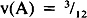

by Abraham Kandel
CRC Press, CRC Press LLC
ISBN: 084934297x Pub Date: 11/01/91
|
|
Fuzzy Expert Systems
by Abraham Kandel CRC Press, CRC Press LLC ISBN: 084934297x Pub Date: 11/01/91 |
| Previous | Table of Contents | Next |
A quick check with Equation 4 shows that S(C, A ∩ B) = S(B ∩ C,A) S(C,B) and that, using min(x,y) ≥ x y for x and y in [0,1], S(A,B) + S(A,Bc) ≥ 1, as stated before. Cox’s argument is limited by its forthright bivalent-logic framework and its assumption that propositional combination operators are twice differentiable! Max and min, like most t-norms and t-conorms, are not differentiable. Indeed, the only popular differentiable t-norm is the probabilistic or product (sum) t-norm (t-conorm) x y (x + y - xy). Outside the Bayesian/frequentist debate in probability theory (in the n - 1 simplex in In), it is hard to imagine citing Cox’s theorem as a constraint on anything, and yet the citation is common in AI polemics against fuzzy theory.8
We note another property of subsethood that follows from the geometric interpretation of fuzzy power sets. The geometric interpretation of B fuzzy power set F(2B) = {A ∈ In: mA(x) ≤ mB(x) for all s} is the hyper-rectangle HB whose sides are defined by the coordinate bounds 0 ≤ xi ≤ mB(xi). Thus, the point B in In is the vertex of HB connected by a long diagonal of HB to the origin. We cannot count HB in any interesting way because every nondegenerate hyper-rectangle in In contains the same uncountable number of points. We must appeal, instead, to Lebesgue measure, which on In is simply the volume of F(2B), which we denote in slightly misleading form as v(B). Analogous to the simple sigma-count sum of fit values, v(B) is simply the product of fit values: v(B) = mB(x1) mB(x2) . . . mB(xn). For example, the rectangular fuzzy power sets of , with , and B = (¾,¼), with , are indicated with appropriate diagonal shading (see Figure 3).
This example illustrates that fuzzy power sets can be represented in a sort of hyper-rectangular Venn diagram. It also is of interest that HA∩B and HA∪B correspond to rectangular combinations of HA and HB only if intersection and union are defined with min and max. This geometry further suggests an alternative definition of subsethood, the volume subsethood V(A,B) = v(A ∩ B)/v(A) provided A is in the interior of In, with corresponding volume fuzzy entropy Ev(A) = v(A ∩ Ac)/v(A ∪ Ac). (Observe that V(A,B) would not depend on A if intersection were defined with product.) In the example, and . However, and , each of which is strictly larger than its volume counterpart. In general, we have the theorem V(A,B) ≤ S(A,B) with equality if, and only if, A = B, as a straightforward derivation shows. This theorem is further evidence for identifying subsethood with S(A,B). Indeed it implies that Ev(A) ≤ E(A), which reminds us that Ev(A) = 0, if, and only if, A is on the boundary of In, not necessarily a vertex. We might call Ev a pseudo-entropy measure since it otherwise satisfies the De Luca Termini axioms.13 The reason for these strict inequalities is, of course, that we are multiplying unit-interval valued quantities. Such products automatically approach 0 as the number of factors increases, regardless of their individual magnitudes. However, since the Σ-count generalizes counting measure, it is not fundamentally affected by large sums. Indeed, it is ultimately defined on countably infinite sets.
Returning to standard fuzzy concepts, a two-place fuzzy relation R is a point in [0,1]n × [0,1]p, i.e., a fuzzy subset of the product space X × Y, i.e., an n-by-p matrix of elements in [O,1]. Similarly defined are n-place fuzzy relations/arrays. If R is an n-by-p relation and S is a p-by-q relation, the max-min n-by-q composition or product R o S is formed analogously to the matrix product R S by replacing pairwise products with pairwise minima and replacing row/column sums with row/column maxima. Then:
A special case of Equation 6 is the 1-by-p set product A o R, where A is a 1-by-n fuzzy set:
Another special case of Equation 6 is the n-by-p set outer composition A o B, which we shall denote as a vector outer product AT o B, where AT is the vector transpose of A, and A is an n-set and B is a p-set:

Incidentally, AT o B = A × B, the fuzzy cartesian product of A and B. We note that the previously stated concepts of intersection, union, complementation, lp distance, cardinality, subsethood, and entropy pass over exactly to n-place relations. For instance, the l1 entropy of the n-by-p relation R is E(R) = ΣCount(R ∩ Rc)/Σcount(R ∪ Rc); if S is also n-by-p, then the degree of subsethood of R in S is
Finally, if A is an n-set and R is a n-by-p relation, then A is a fuzzy eigenset of R if A o R = A.
| Previous | Table of Contents | Next |
){kind=link}